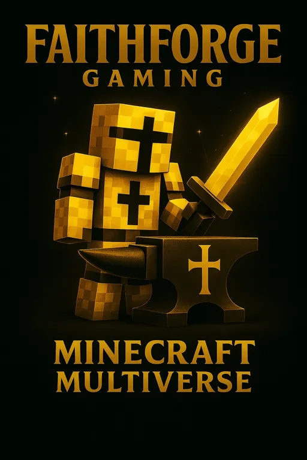
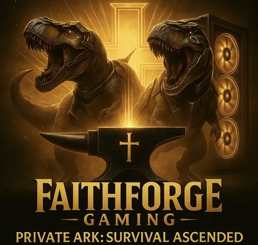
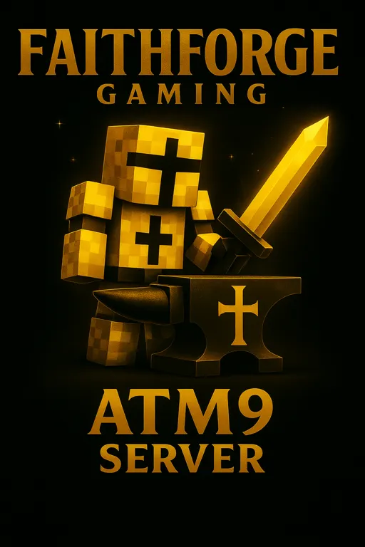

Christian Fellowship
Build genuine friendships with believers who share your faith and love of gaming.
A Christ-centered community for gamers.
FaithForge Gaming is a fast growing Christian gaming community with more Discord members every day, family-friendly gaming servers, Christian streamers, Bible studies, community events, devotions, prayer, and online fellowship.
See what is happening next across FaithForge Gaming.
Loading upcoming events...
When a featured FaithForge creator goes live, the stream appears here.
Checking status...Please wait while we load the current featured stream.
Build genuine friendships with believers who share your faith and love of gaming.
Find players across multiplayer games, community servers, tabletop campaigns, and events.
Enjoy Bible studies, devotions, prayer, livestreams, and encouragement centered on Christ.
Connect with other Christian gamers across some of our most active games.
Join Christian gamers in persistent worlds built for cooperation, adventure, fellowship, and community.

Survival, creative, RPG content, minigames, Skyblock, and multiple community worlds.

A cooperative survival experience featuring exploration, building, progression, bosses, and community adventure.

Customized rates, community progression, events, building, taming, and exploration.

A cooperative, cross-platform Palworld PvE server with boosted progression, faster gathering and hatching, no required mods, and a Christ-centered, family-friendly community.

Technology, magic, automation, dimensions, storage systems, bosses, and cooperative modded gameplay.

Journey through Middle-earth on our modded Minecraft Java 1.7.10 LOTR server. Explore a massive world, meet familiar factions and NPCs, complete quests, trade, build, and forge your own cooperative adventure inspired by The Lord of the Rings.

Dungeons & Dragons adventures, including quarterly one-shots and ongoing monthly campaign sessions. Our featured campaign, Shadows of Redemption, is designed so new players can join the adventure even after the story has already begun.
Watch our newest faith-centered gaming content, Bible encouragement, livestream highlights, community updates, and short-form videos.
“As iron sharpens iron, so one person sharpens another.”
Read Our DevotionsSearch a Bible passage in the Berean Standard Bible. View the verse, copy it with its reference, or open the full chapter without leaving the page.
Meet Christian streamers and creators who build community, share faith-centered content, encourage others, and represent FaithForge Gaming with integrity and purpose.
Our quarterly Raid Train brings the community together to support current, new, and growing Christian streamers through live raids, follows, chat support, and shared encouragement.